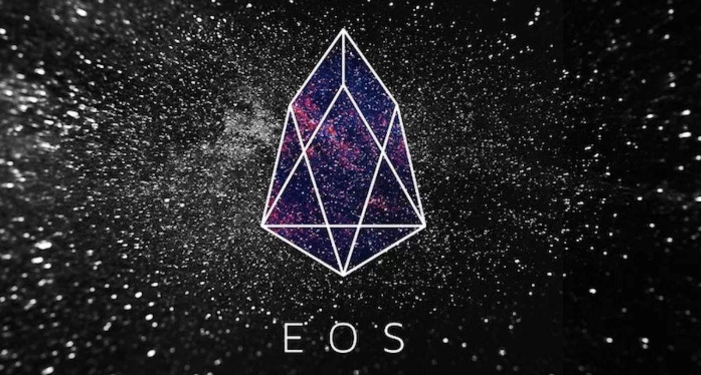

EOS topped the list with a total score of 156.1 points. Ethereum ranked second, with an assessment index of 136.4. The two indexes are still the lead at the very top.
GXchain replaced BitShares in third place with a score of 117.5 in this assessment, while BitShare fell by five in the current evaluation, ranking eighth. Komodo, Ontology, NULS, Nebulas, BitShares, NEO, and Steem shared the fourth through 10th spots. Bitcoin evaluation index stayed in the middle of the list with a score of 96.1, ranking 18th.
| xrp | 10000% | $589 |
| Eos | 10000% | $899 |
| Tron | 10000% | $2 |